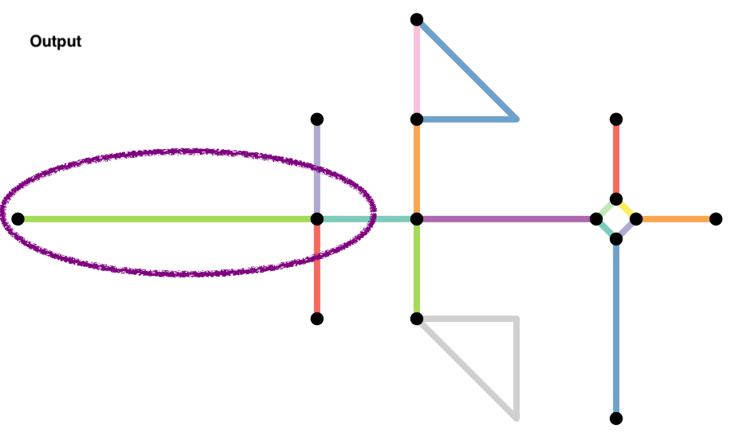

Intersection Density From OSM using QGIS & R

Introduction
Often one of the key indicators for measuring walkability of a place is the intersection density of road network. In grid networks, roads intersect at regular intervals and are likely to result in more walkable paths than cul-de-sac patterns. Thus planners often use this metric to to measure urban form (see e.g. EPA’s EnviroAtlas). In this post, I am going to demonstrate how to calculate this measure for any place in the world where Open Street Map has a reasonably detailed and accurate street network.
Plugins & Packages
In this post, I am going to use plugins for QGIS called QuickOSM and Processing R Provider. They can be downloaded and installed from Plugins > Manage and Install Plugins. As of writing, both these plugins are available in the official QGIS repository.
You will need to make sure that path to the R executables and R libraries are known to the Processing framework. Please follow the instructions located on the plugin’s website
Within R, in addition to tidyverse and sf suite of packages, we are going to use tidygraph and sfnetworks. Please download and install them.
What is Processing?
Since QGIS 2.0, the Processing Framework provides an environment within QGIS to run native and third-party algorithms for processing data. For example, you can run powerful hydrological algorithms from GRASS GIS or remote sensing algorithms from Orfeo Toolbox within QGIS. In addition to individual tools, you can also ability to batch process them and create graphical models to build a workflow, e.g. outputs of one algorithm as inputs to another. A good introduction to Processing is from Ujaval’s website.
Download Data from OSM
OpenStreetMap (OSM) is a collaborative project to create a free editable geographic database of the world. For the purposes of this tutorial, we are simply going to use the data from this project rather than contributing to it.
While the OSM data is comparable to proprietary data sources (e.g.Google Maps and Bing) in its coverage and accuracy, it should be noted that as a collaborative project it has its own unique biases. See for example,
- Das, Maitraye, Brent Hecht, and Darren Gergle. 2019. “The Gendered Geography of Contributions to OpenStreetMap: Complexities in Self-Focus Bias.” In Proceedings of the 2019 CHI Conference on Human Factors in Computing Systems, 1–14. New York, NY, USA: Association for Computing Machinery. https://doi.org/10.1145/3290605.3300793.
In the following short video I demonstrate how to download the street network for Accra, Ghana using the QuickOSM plugin. QuickOSM allows us to download OSM data for small areas. To quickly figure out an extent of a small area, I am going to use the subnational administrative boundaries of Ghana downloaded from the Humanitarian Data Exchange. I am primarily focused on Admin Level 2 boundaries. Add them to the project.
Once you added the polygons, select some polygons around Accra to specify the extent of the OSM download. Note that, selecting a large area will overwhelm the OSM servers and will not result in an output. Be judicious.
Once you have downloaded and added the road network into QGIS, you are ready to use Processing framework to run an R script that counts the intersections. In the following video I give a quick overview of how you might run it and in the rest of the tutorial, I am going to explain the script in detail.
The script that is used in the video is the following.
##QgsProcessingParameterFeatureSource|INPUT|Lines|1
##Use_Spatial_Subdivision=boolean TRUE
##Use_Spatial_Smooth=boolean TRUE
##Use_Spatial_Contraction=boolean FALSE
##QgsProcessingParameterNumber|EPS|Clustering Parameter (Only used when Contraction is selected) |QgsProcessingParameterNumber.Integer|30
##Grid_Type=enum literal Fishnet;Hexabin
##intersections=output vector
##Output_Grid=output vector
library(sf)
library(tidyverse)
library(tidygraph)
library(sfnetworks)
net <- INPUT%>%st_as_sf()%>%
as_sfnetwork(directed = FALSE)
node_coords <- net %>%
activate("nodes") %>%
st_coordinates()
node_coords_x_mean <- mean(node_coords[,1], na.rm=T)
node_coords_y_mean <- mean(node_coords[,2], na.rm=T)
UTMzone <- floor((node_coords_x_mean + 180)/6 %% 60) + 1
EPSGcode <- ifelse (node_coords_y_mean>=0, 32600+UTMzone, 32700+UTMzone)
if(Use_Spatial_Subdivision){
net <- tidygraph::convert(net, to_spatial_subdivision)
}
if(Use_Spatial_Smooth){
net <- tidygraph::convert(net, to_spatial_smooth)
}
if(Use_Spatial_Contraction){
node_coords_proj <- net %>%
activate("nodes") %>%
st_transform(EPSGcode) %>%
st_coordinates()
clusters = dbscan::dbscan(node_coords_proj, eps = EPS, minPts = 1)$cluster
clustered <- net %>%
activate("nodes") %>%
mutate(cls = clusters,
cmp = group_components()
)
net <- convert(
clustered,
to_spatial_contracted,
cls, cmp
)
}
intersections <- net %>%
activate('nodes') %>%
mutate(deg = igraph::degree(.)) %>%
filter(deg>=2) %>%
st_as_sf %>%
st_transform(EPSGcode)
if(Grid_Type == "Fishnet"){
area_grid <- st_make_grid(intersections, c(500, 500), what = "polygons", square = TRUE)
} else {
area_grid <- st_make_grid(intersections, c(500, 500), what = "polygons", square = FALSE)
}
Output_Grid <- st_sf(area_grid) %>%
# add grid ID
mutate(grid_id = 1:length(lengths(area_grid)))
Output_Grid$n_intersections <- lengths(st_intersects(Output_Grid, intersections))
Output_Grid <- Output_Grid %>% filter(n_intersections>0)
Setting the Parameters for Processing
##QgsProcessingParameterFeatureSource|INPUT|Lines|1
##Use_Spatial_Subdivision=boolean TRUE
##Use_Spatial_Smooth=boolean TRUE
##Use_Spatial_Contraction=boolean FALSE
##QgsProcessingParameterNumber|EPS|Clustering Parameter (Only used when Contraction is selected) |QgsProcessingParameterNumber.Integer|30
##Grid_Type=enum literal Fishnet;Hexabin
##intersections=output vector
##Output_Grid=output vector
The first part of the script that starts with ## is setting the input and output parameters and variable names for the Processing. It is a little confusing and annoying that while R uses # to denote a comment, this framework uses ##. Also note that in Markdown # refers to section heading.
I strongly recommend reading the script syntax at the website for the plugin.
You can specify the inputs in two different formats
- variable_name=variable_type [default_value/from_variable]
- QgsProcessingParameter|name|description|other_parameters_separated_by_pipe
We use both of types in the above script. For example, QgsProcessingParameterFeatureSource|INPUT|Lines|1 specifies that there will be variable INPUT that will be a vector Line layer; its name on the UI will be “Lines.” If you want any geometry, specify -1, 0 for point, 1 for line, 2 for polygon, 5 for table. I ignored the optional description in this case but used it in the QgsProcessingParameterNumber.
Grid_Type=enum literal Fishnet;Hexabin and Output_Grid=output vector uses the second format. Grid_Type and Output_Grid are names of the variables and can be referenced in the script.
Output_Grid=output vector also specifies that Output_Grid is an output and will be routed back to QGIS.
=. If you include space, your script will not run.
The part of the code generates the user interface to specify input parameters.
Notice the substitution of _ with \space in the user interface. However, do not be fooled by it in the script.
Converting a Street Network into a Useable Graph
Mathematically a network/graph is a collection of links and nodes. For many applications, what really matters is the connections and relationships among these links and nodes, but not the spatial attributes these links and nodes. In other words, topological relationships are more important than spatial relationships. See for example, the Input Output matrix of various industries, or social network of different individuals or networks of neurons in brain.
However, in spatial networks, the location of the roads and street intersection matter. Furthermore, the representation of streets as lines (straight, or multilines, curved roads), their directionality (one-way, two-way), the precision (e.g. dangling, snaps), crossings (at grade, overpass etc.), road type (limited access, pedestrian etc.) all matter for how we construct what are links and which nodes (intersections) are relevant.
Much of the analysis is trying to figure out appropriate ways to clean the street network data so that only relevant nodes and links are kept in the graph. Because the road networks are different in different parts of the world, it is hard to come up with a consistent set of rules that will work everywhere. In this script, I am demonstrating some key data cleaning steps that are often needed on a toy network used in the sfnetworks vignette.
Here are some common issues and rules we often use. As with everything, these are not exhaustive.
-
Curved Roads or road with multiple segments (e.g. change in directions) that have the same ID are not considered intersecting.
-
End nodes (e.g. cul-de-sacs) do not contribute to walkability and should be ignored in street intersection density calculations. Because these nodes have degree 1 (only one edge is incident on them), we can filter them relatively easily after the fact.
-
When a network is constructed, nodes are constructed from shared endpoints. However, sometimes, road may overlap and share some interior points resulting in a missing node. Often this is because they are overpasses or underpasses, but sometimes they are mapping errors. To rectify these mapping errors we can use
to_spatial_subdivision().

-
Roads that continue in the same direction but have different IDs (or names) will often be coded as different roads. However, the intersection of these two roads should be considered a false node. We can eliminate them in two different ways.
-
They have degree 2. So we can try and filter them out after the fact. However, there might be instances where degree 2 nodes might be true intersections, such as the intersection at te lower triangle in the example (why?). Exercise caution.
-
We can apply
to_spatial_smoothto remove these pseudonodes. This function iteratively smooths pseudo nodes, and after each removal concatenates the linestring geometries of the two affected edges together into a new, single linestring geometry.
-

- Often we want to simplify the topology of the network, by reducing the complex intersection structures into a single node you might want to reduce such complex intersection structures into a single node, but still maintaining the connectivity of the network.
The function to_spatial_contracted() contracts groups of nodes based on a given grouping variable. Any grouping variable is permitted, however to spatially contract them, we can use nodes that are within a certain distance from each other. Few things to keep in mind.
-
Often DBSCAN algorithm is used to create these groups. You should be able to use the algorithm in
dbscanpackage. This is a very good unsupervised clustering algorithm and it is useful to learn it well and often works well for identifying spatial clusters. However, it is quite dependent on the size of the epsilion neighborhood. See this post for more details. -
Be aware of the coordinate systems, projections, and units when specifying the distance. In the above script, we explicitly transformed the projection to a UTM projection that is relevant. The UTM zone is automatically calculated from the Longitude. However, this UTM zone may not be correct in some special instances such as near the poles. See the discussion on Stackoverflow
-
When simplifying intersections, it is not only important that the contracted nodes are close to each other in space. They should also be connected. Use
tidygraph::group_componentas an additional clustering variable.
All these are accomplished by the following bit of the code
if(Use_Spatial_Contraction){
node_coords_proj <- net %>%
activate("nodes") %>%
st_transform(EPSGcode) %>%
st_coordinates()
clusters = dbscan::dbscan(node_coords_proj, eps = EPS, minPts = 1)$cluster
clustered <- net %>%
activate("nodes") %>%
mutate(cls = clusters,
cmp = group_components()
)
net <- convert(
clustered,
to_spatial_contracted,
cls, cmp
)
}
These are but some of the steps needed to convert convert the streets data to a usable network.
Exercise
-
Focus only on pedestrian oriented streets by assuming that large highway intersections are not suitable for walkablity.
-
Roundabouts pose particular problems for intersections, conceptually and analytically. Figure out appropriate ways to deal with intersections associated with roundabouts.
Calculating Intersection Density
Often it is useful to aggregate the number of intersections to a regular grid (hexagonal or otherwise). Because of the regularity the count of intersections would be proportional to the number of intersections. This step is accomplished by creating a grid using st_make_grid and st_intersects.
Exercise
-
Make the grid size an input variable and see how the visualisations change.
-
Change the symbology within QGIS to quickly visualise walkable areas and non-walkable areas.
-
Repeat this entire exercise for various places around the world, (e.g. Cape Town, South Africa Nagano, Japan, and Yangoon, Myanmar) and identify any differences in the ways we should approach the idea of intersection density.
Caveats and Conclusions
One of the goals of this exercise is to demonstrate how to use open source data for analysis around the world rather than limiting urban analytics to data in the developed world. However, the mental maps of what is relevant and interpretations may color our understanding of what is walkable and what is not or even what is an intersection and what is not. Therefore, we should be mindful of local knowledge and expertise that might help us make critical analytical decisions.
Nikhil Kaza
Professor
My research interests include urbanization patterns, local energy policy and equity